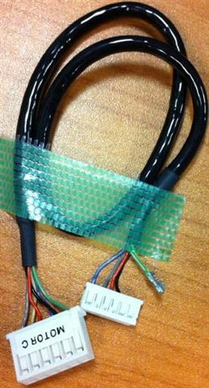

Service History
Subject: NS-8040 T-4040 Communication error with the Pulse Generating Board
Handler Model: NS-8040 (NS-100 S/N: 181213 )
Controller: RC520
Date: 21 Jan 2011
Symptom
Infineon NS-8040 T-4040 Communication error with the Pulse Generating Board.
According to customer, Handler unable to Home.
Action
In Spel, execute MCAL for input arm ok, but MCAL unable to complete execution for output Arm.
Found out Output Arm Hand C stepper motor's green and yellow wire came loose from motor connector.

Tried to solder, but soldering lead enter pin obstructing pin to connect to stepper motor.
Bring back defective stepper motor cable for rework.
Cause
Output Arm Hand C stepper motor's green and yellow wire came loose from motor connector.
Remarks
Output Hand C Stepping Motor cable, Part code no. is R35N800031400.